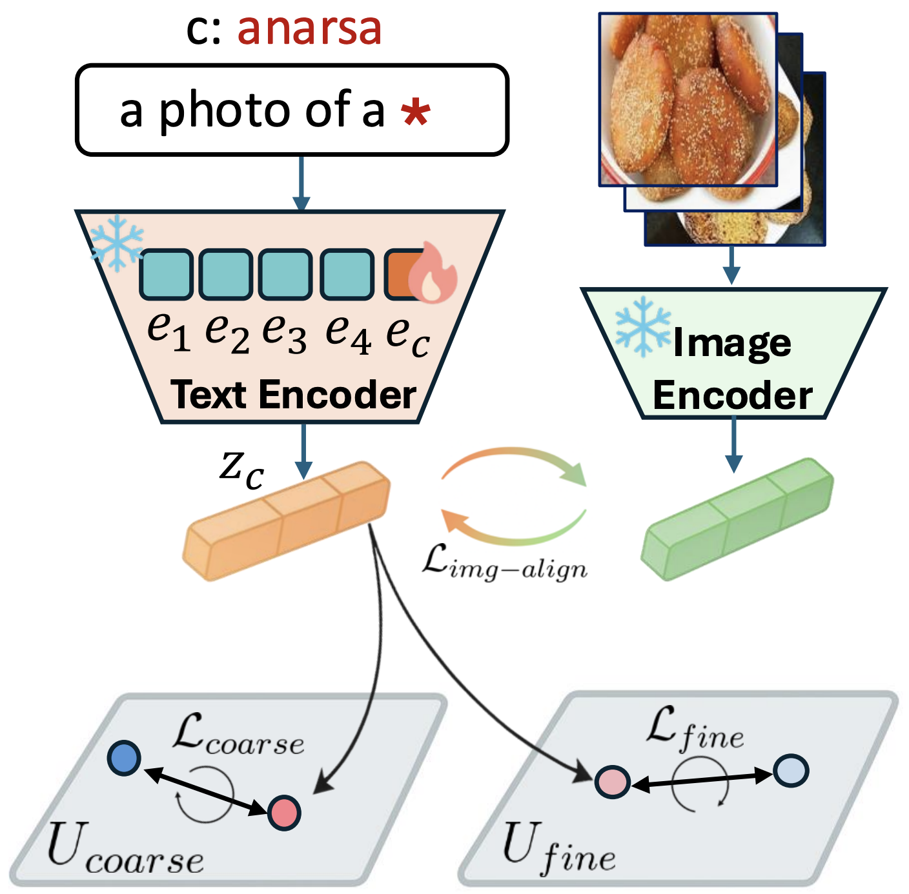
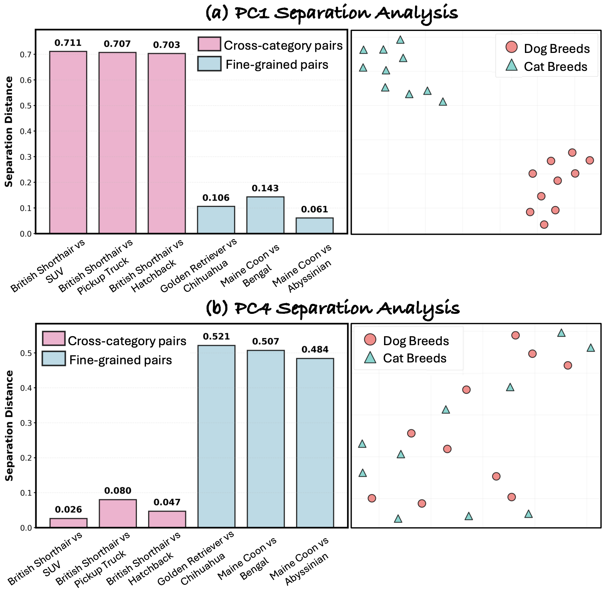

Figure 1: LiteEmbed enables few-shot adaptation of CLIP to rare classes without retraining the model.
Given only 3–5 reference images, LiteEmbed learns a refined text embedding that improves recognition and retrieval of rare categories.
The optimized embeddings can be directly plugged into existing CLIP-based pipelines for classification, retrieval, segmentation, and detection.
Abstract
Large-scale vision–language models such as CLIP achieve strong zero-shot recognition but struggle with classes rarely seen during pretraining,
including newly emerging entities and culturally specific concepts.
We introduce LiteEmbed, a lightweight framework that adapts CLIP to rare classes using only a few reference images.
LiteEmbed performs subspace-guided optimization of text embeddings using a PCA-based decomposition of CLIP’s embedding space,
balancing coarse semantic anchoring with fine-grained discrimination.
The resulting embeddings are plug-and-play and improve performance across classification, retrieval, segmentation, detection,
and text-to-image generation without retraining CLIP encoders.
Method

Figure 2: Overview of LiteEmbed.
For a target class, a learnable token embedding is inserted into a CLIP text prompt and optimized using a small set of reference images.
The optimization combines image–text alignment with subspace-guided constraints that preserve coarse semantic relationships while enforcing separation from visually confusable classes.
Understanding CLIP Geometry
Figure 3: t-SNE visualization of CLIP’s text embedding space during adaptation.
Naïve optimization using only image–text alignment leads to discriminative collapse and semantic drift between visually similar classes.
LiteEmbed maintains separation between classes while preserving semantic structure.

Figure 4: PCA analysis of CLIP’s text embedding space.
High-variance components capture coarse semantic structure across categories,
while lower-variance components encode fine-grained distinctions between visually similar classes.
LiteEmbed leverages this hierarchy to guide optimization.
Results
Figure 5: Few-shot classification results across eight datasets.
LiteEmbed consistently outperforms prompt-learning, adapter-based, and test-time adaptation methods,
achieving substantial improvements over CLIP’s zero-shot performance.
Figure 6: Continual adaptation results where new classes are introduced sequentially.
LiteEmbed integrates new concepts while maintaining stable performance on previously learned classes.
Plug-and-Play Across Tasks
Figure 7: Qualitative results demonstrating improvements in retrieval, segmentation, and detection
when CLIP text embeddings are replaced with LiteEmbed embeddings.
Figure 8: Generation results showing that LiteEmbed embeddings can be used with textual inversion
to enable improved compositional editing and controllable generation.
Limitations
LiteEmbed relies on the semantic structure of CLIP's embedding space.
In cases where visual ambiguity between classes is extremely high,
or when prompts require complex compositional reasoning,
adaptation may still produce imperfect alignment.
Future work will explore extending subspace-guided optimization
to larger multimodal models and more complex adaptation settings.
Citation
@article{agarwal2026liteembed,
title={LiteEmbed: Adapting CLIP to Rare Classes},
author={Agarwal, Aishwarya and Karanam, Srikrishna and Gandhi, Vineet},
journal={arXiv preprint arXiv:2601.09661},
year={2026}
}